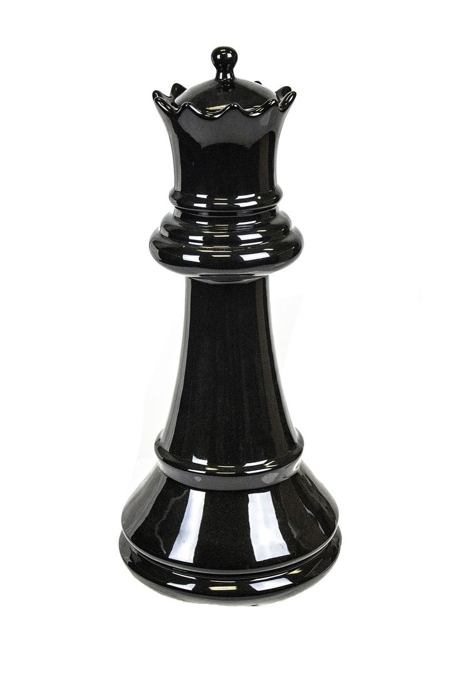

Ферзь
Ферзь может перемещаться на любое число свободных полей по прямой линии — горизонтально, вертикально или по диагонали.Не может «перепрыгивать» через другие фигуры (ни свои, ни чужие).
Если на пути стоит фигура противника, ферзь может её «взять» (удалить с доски и занять её поле).
Если путь перекрывает фигура того же цвета, что сам ферзь, — путь закрыт.
